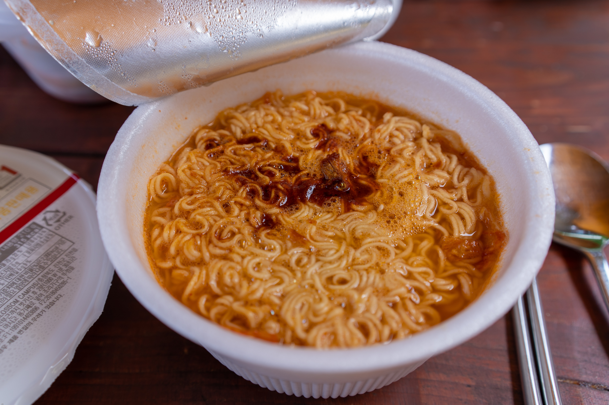

Ramen noodles recipe

This is a recipe dating all the way back to World War II and its been passed down through generations.
List of Ingredients -
- some money
- around 10-15mins of spare time
- 1 packet of instant noodles (preferably top ramen)
Instructions -
- Step 1: It's instant ramen lmao. Just follow the instructions on the back in case you don't already know how to boil noodles and some spice powder in water.
- Step 2: Enjoy your ramen